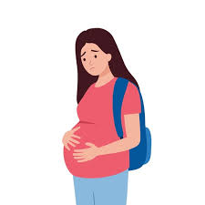

El embarazo adolescente en México representa un problema de salud pública y un desafío social prioritario debido a sus profundas implicaciones en el desarrollo personal, económico y educativo de las jóvenes. Históricamente, el país ha ocupado los primeros lugares en tasas de fecundidad adolescente entre los miembros de la Organización para la Cooperación y el Desarrollo Económicos, aunque gracias a la Estrategia Nacional para la Prevención del Embarazo en Adolescentes se ha registrado una tendencia a la baja, situando la tasa de fecundidad en alrededor de 45.2 nacimientos por cada mil mujeres de 15 a 19 años. A pesar de este avance, persiste una marcada brecha de desigualdad, ya que en zonas rurales e indígenas la incidencia de embarazos puede duplicar la media nacional.En el ámbito de la educación media superior, que abarca el bachillerato o la preparatoria, la problemática adquiere una relevancia crítica porque la edad de las estudiantes coincide exactamente con la etapa de mayor riesgo estadístico. El embarazo se mantiene como una de las causas principales de deserción escolar en las mujeres a este nivel, provocando que muchas jóvenes suspendan de forma temporal o definitiva sus estudios debido a la falta de redes de apoyo, las exigencias del cuidado del recién nacido y la presión económica. Este abandono escolar frena el proyecto de vida de las alumnas, anulando sus posibilidades de acceder a la educación superior y condenándolas, en la mayoría de los casos, a empleos informales, de baja remuneración y sin prestaciones de ley, lo que perpetúa un círculo intergeneracional de pobreza.Dentro de las aulas de bachillerato, los factores de riesgo suelen estar asociados a deficiencias en la educación integral en sexualidad, que a menudo se imparte de forma teórica sin abordar la negociación del uso de métodos anticonceptivos o la prevención práctica. Asimismo, muchas adolescentes reportan no haber utilizado protección en sus primeras relaciones por una percepción errónea del riesgo, argumentando que no planeaban tener relaciones ese día o que creían que no podían quedar embarazadas. Para mitigar esta situación y fomentar la retención escolar, el sistema educativo y de salud en México implementa medidas como becas de apoyo económico para madres jóvenes, servicios médicos amigables que ofrecen anticonceptivos gratuitos de manera confidencial y esquemas de flexibilidad académica que permiten a las alumnas retomar sus estudios tras la maternidad.En el contexto del Instituto Politécnico Nacional (IPN), esta realidad se manifiesta de manera particular en los Centros de Estudios Científicos y Tecnológicos (CECyT). Al ser una institución con una alta exigencia académica y programas orientados a la ciencia y la tecnología, la carga horaria y los laboratorios prácticos representan un desafío doble para las alumnas que enfrentan un embarazo. Si bien el IPN ha implementado programas de tutorías, servicios de orientación juvenil y convenios de becas para evitar la deserción, el estigma social y la dificultad para conciliar la maternidad con el rigor técnico del "Politécnico" siguen siendo barreras invisibles. La deserción en este nivel no solo trunca la trayectoria escolar inmediata de las politécnicas, sino que también las aleja de las áreas STEM (Ciencia, Tecnología, Ingeniería y Matemáticas), un sector clave para el desarrollo del país donde la representación femenina ya es de por sí limitada.